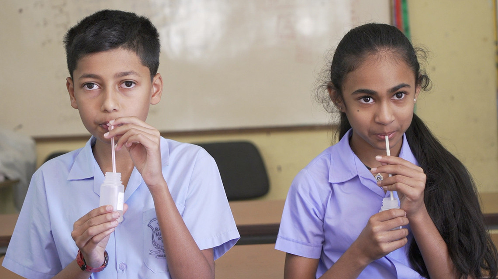

Understanding Human Calorie Needs:
IAEA Supports FAO and WHO
Publish on 2024/8/28.
By. Peter Lee, IAEA Department of Nuclear Sciences and Applications
Cecilie Wille, IAEA Department of Nuclear Sciences and Applications
Energy requirements reflect what an individual needs to maintain all bodily functions, depending on life stage and activity,
and are essential for evaluating how well food supplies can meet the nutritional demands of a population. (Photo: Adobe Stock)
For the first time, the International Atomic Energy Agency (IAEA) is assisting United Nations nutrition experts in reevaluating human energy requirements. These requirements, last assessed in 2001, are essential for understanding and addressing global hunger.
Key Points:
- IAEA's Role:
IAEA provides nuclear science expertise and data to help understand and calculate calorie and nutrition needs, in partnership with FAO, WHO, and others.
- Importance:
Accurate energy requirements are essential for SDG2 (Zero Hunger) reporting, particularly for undernourishment.
- Current Situation:
Over 700 million people were hungry last year. To achieve the 2030 goal to end hunger and malnutrition, more targeted efforts are needed. Undernutrition remains a major challenge.
- Review and Challenges:
IAEA, FAO, WHO, and experts reviewed human energy requirements, noting the complexity of estimating accurate needs for different populations.
- Scientific Developments:
Since the 1950s, FAO and WHO have assessed energy requirements. New evidence suggests some aspects of the 1985 Schofield equations may not be universally accurate.
- Data Gaps:
Key gaps include energy needs of underrepresented populations in low- and middle-income countries, people over 90, and pregnant and lactating women. A roadmap for updating estimates and future research areas was created.
- IAEA’s Contributions:
The IAEA’s Doubly Labelled Water (DLW) Database helps redefine human energy metabolism. The IAEA also gathers additional data on specific populations.
- Future Steps:
Continued global consultations with dietitians, clinicians, and public health experts. Participants will collaborate on papers to shift understanding of human energy requirements.
These efforts highlight the critical need for accurate, updated data to inform policies and actions aimed at combating global hunger and malnutrition.

These children in Mauritius are taking part in nutrition research using nuclear science. (Photo: J. Weilguny/IAEA)
Energy requirements reflect what an individual needs to maintain all bodily functions, including growth and development, depending on life stage and activity level for long-term health. These requirements are essential for evaluating how well food supplies can meet the nutritional demands of a population.
These requirements vary based on a person’s age, gender, physiological status (e.g., pregnancy), level of physical activity, basal metabolic rate (BMR) (the energy needed for basic life functions such as breathing and maintaining body temperature), and environment. For certain groups,
they include additional energy needs, such as optimal growth in children, tissue development in pregnant women, and milk production in lactating mothers.
Estimating accurate energy requirements involves complex calculations and challenges, especially for specific sub-populations around the globe.
Since the 1950s, the FAO and WHO have worked with global nutrition specialists to assess energy requirements. Their most recent assessment in October 2001 provided key recommendations for specific groups and used international calculations
(Schofield’s equations from 1985) to estimate BMR based on gender, age, weight, and physical activity level.
However, recent scientific evidence suggests that some aspects of these equations
may not be adequate or accurate for universal use.
The FAO’s 2004 report highlighted several developments affecting BMR, such as the
increase in global obesity, variations in metabolically active tissues across different populations
, and declines in the energy needed for essential bodily functions.
Experts identified data gaps , particularly regarding the energy requirements of
underrepresented populations in low- and middle-income countries, people over 90, and pregnant and lactating women.
They formulated a roadmap for updating energy requirement estimates and suggested areas for future research.
The IAEA’s Doubly Labelled Water (DLW) Database has been used by scientists to redefine understandings of human energy metabolism. (Photo: IAEA)
The IAEA can help revise energy requirements by providing data. It has a
Doubly Labelled Water (DLW) Database
with nearly 12,000 measurements of daily energy use from babies to people in their 90s across 40 countries. This data has already helped scientists understand human energy use better.
The IAEA can also help fill knowledge gaps for specific groups and regions.
For example, in 2022, they started a project to gather more data on energy use for pre-teens and teens in low- and middle-income countries (LMICs).
Moving forward, the United Nations agencies will continue to include dietitians, doctors, and other health experts in their discussions.
As a next step, the meeting’s participants will work on papers to show the need for a new way of thinking about human energy needs,” said
Cornelia Loechl, Head of the Nutritional and Health-Related Environmental Studies Section in the IAEA’s Division of Human Health.
Want to Read More ? Click here üëÜ !